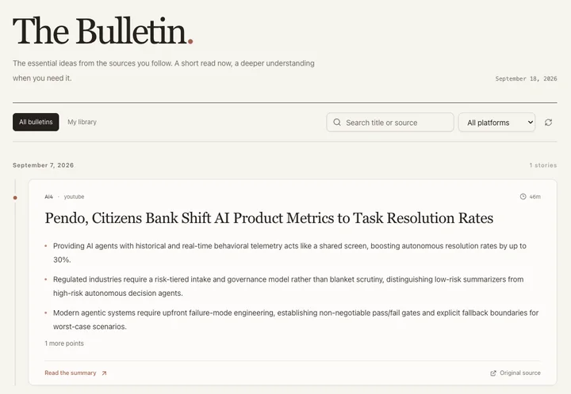

Ask about the page you already have open. Site-specific skills give the agent tools for working with what’s on screen.
Chrome extension / TypeScript / Pi
I build browser tools, turn long recordings into reading notes, and replay market data one snapshot at a time.
Type ls to list projects or help for commands.
Read a conference talk over coffee. Each bulletin takes you from the key ideas back to the moment they were said.
TypeScript / Cloudflare Workers / D1

Ask about the page you already have open. Site-specific skills give the agent tools for working with what’s on screen.
Chrome extension / TypeScript / Pi
Keep a timeline of conversations and shared memories on your own server. Follow the relationship graph to see how people connect.
Python / FastAPI / Next.js
Capture Polymarket US order books in Parquet. Replay snapshots by arrival time to see what the recorder could observe at each step.
Rust / Parquet / Zstandard
Compare hotel awards by the cash saved per point. The userscript adds the numbers to the LHW search results while you browse.
JavaScript / Userscript / Bookmarklet
An interactive presentation on streaming new blockchain data while backfilling historical records.